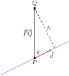

To find the equation of a line in the \(xy\)-plane, we need two pieces of information: a point and the slope. The slope conveys direction information. As vertical lines have an undefined slope, the following statement is more accurate:
To define a line, one needs a point on the line and the direction of the line.
Let \(P\) be a point in space, let \(\vec p\) be the vector with initial point at the origin and terminal point at \(P\) (i.e., \(\vec p\) “points” to \(P\)), and let \(\vec d\) be a vector. Consider the points on the line through \(P\) in the direction of \(\vec d\text{.}\)
Clearly one point on the line is \(P\text{;}\) we can say that the vector\(\vec p\) lies at this point on the line. To find another point on the line, we can start at \(\vec p\) and move in a direction parallel to \(\vec d\text{.}\) For instance, starting at \(\vec p\) and traveling one length of \(\vec d\) places one at another point on the line. Consider Figure 11.5.2 where certain points along the line are indicated.
The figure illustrates how every point on the line can be obtained by starting with \(\vec p\) and moving a certain distance in the direction of \(\vec d\text{.}\) That is, we can define the line as a function of \(t\text{:}\)
\begin{equation}
\vec\ell(t) = \vec p + t\ \vec d\text{.}\tag{11.5.1}
\end{equation}
In many ways, this is not a new concept. Compare Equation (11.5.1) to the familiar “\(y=mx+b\)” equation of a line:
Figure11.5.3.Understanding the vector equation of a line
The equations exhibit the same structure: they give a starting point, define a direction, and state how far in that direction to travel.
Equation (11.5.1) is an example of a vector-valued function; the input of the function is a real number and the output is a vector. We will cover vector-valued functions extensively in the next chapter.
There are other ways to represent a line. Let \(\vec p = \la x_0,y_0,z_0\ra\) and let \(\vec d = \la a,b,c\ra\text{.}\) Then the equation of the line through \(\vec p\) in the direction of \(\vec d\) is:
The last line states that the \(x\) values of the line are given by \(x=x_0+at\text{,}\) the \(y\) values are given by \(y = y_0+bt\text{,}\) and the \(z\) values are given by \(z = z_0 + ct\text{.}\) These three equations, taken together, are the parametric equations of the line through \(\vec p\) in the direction of \(\vec d\text{.}\)
Finally, each of the equations for \(x\text{,}\)\(y\) and \(z\) above contain the variable \(t\text{.}\) We can solve for \(t\) in each equation:
\begin{align*}
x = x_0+at \amp \Rightarrow t=\frac{x-x_0}{a},\\
y=y_0+bt \amp \Rightarrow t = \frac{y-y_0}{b},\\
z = z_0+ct \amp \Rightarrow t = \frac{z-z_0}{c}\text{,}
\end{align*}
assuming \(a,b,c\neq 0\text{.}\) Since \(t\) is equal to each expression on the right, we can set these equal to each other, forming the symmetric equations of the line through \(\vec p\) in the direction of \(\vec d\text{:}\)
Each representation has its own advantages, depending on the context. We summarize these three forms in the following definition, then give examples of their use.
Definition11.5.4.Equations of Lines in Space.
Consider the line in space that passes through \(\vec p = \la x_0,y_0,z_0\ra\) in the direction of \(\vec d = \la a,b,c\ra\text{.}\)
Give all three equations, as given in Definition 11.5.4, of the line through \(P = (2,3,1)\) in the direction of \(\vec d = \la -1,1,2\ra\text{.}\) Does the point \(Q=(-1,6,6)\) lie on this line?
The first two equations of the line are useful when a \(t\) value is given: one can immediately find the corresponding point on the line. These forms are good when calculating with a computer; most software programs easily handle equations in these formats. (For instance, the graphics program that made Figure 11.5.6 can be given the input “(2-t,3+t,1+2*t)” for \(-1\leq t\leq 3\text{.}\)).
Does the point \(Q = (-1,6,6)\) lie on the line? The graph in Figure 11.5.6 makes it clear that it does not. We can answer this question without the graph using any of the three equation forms. Of the three, the symmetric equations are probably best suited for this task. Simply plug in the values of \(x\text{,}\)\(y\) and \(z\) and see if equality is maintained:
Recall the statement made at the beginning of this section: to find the equation of a line, we need a point and a direction. We have two points; either one will suffice. The direction of the line can be found by the vector with initial point \(P\) and terminal point \(Q\text{:}\)\(\overrightarrow{PQ} = \la -1,4,-3\ra\text{.}\)
The parametric equations of the line \(\ell\) through \(P\) in the direction of \(\overrightarrow{PQ}\) are:
A graph of the points and line are given in Figure 11.5.8. Note how in the given parametrization of the line, \(t=0\) corresponds to the point \(P\text{,}\) and \(t=1\) corresponds to the point \(Q\text{.}\) This relates to the understanding of the vector equation of a line described in Figure 11.5.3. The parametric equations “start” at the point \(P\text{,}\) and \(t\) determines how far in the direction of \(\overrightarrow{PQ}\) to travel. When \(t=0\text{,}\) we travel 0 lengths of \(\overrightarrow{PQ}\text{;}\) when \(t=1\text{,}\) we travel one length of \(\overrightarrow{PQ}\text{,}\) resulting in the point \(Q\text{.}\)
Subsection11.5.2Parallel, Intersecting and Skew Lines
In the plane, two distinct lines can either be parallel or they will intersect at exactly one point. In space, given equations of two lines, it can sometimes be difficult to tell whether the lines are distinct or not (i.e., the same line can be represented in different ways). Given lines \(\vec\ell_1(t) = \vec p_1 + t\vec d_1\) and \(\vec \ell_2(t) = \vec p_2+t\vec d_2\text{,}\) we have four possibilities: \(\vec \ell_1\) and \(\vec \ell_2\) are
the same line
they share all points
intersecting lines
they share only 1 point;
parallel lines
\(\vec d_1\parallel \vec d_2\text{,}\) no points in common;
skew lines
\(\vec d_1\nparallel \vec d_2\text{,}\) no points in common.
The next two examples investigate these possibilities.
Example11.5.9.Comparing lines.
Consider lines \(\ell_1\) and \(\ell_2\text{,}\) given in parametric equation form:
We start by looking at the directions of each line. Line \(\ell_1\) has the direction given by \(\vec d_1=\la 3,-1,1\ra\) and line \(\ell_2\) has the direction given by \(\vec d_2 = \la 4,1,2\ra\text{.}\) It should be clear that \(\vec d_1\) and \(\vec d_2\) are not parallel, hence \(\ell_1\) and \(\ell_2\) are not the same line, nor are they parallel. Figure 11.5.10 verifies this fact (where the points and directions indicated by the equations of each line are identified).
We next check to see if they intersect (if they do not, they are skew lines). To find if they intersect, we look for \(t\) and \(s\) values such that the respective \(x\text{,}\)\(y\) and \(z\) values are the same. That is, we want \(s\) and \(t\) such that:
This is a relatively simple system of linear equations. Since the last equation is already solved for \(t\text{,}\) substitute that value of \(t\) into the equation above it:
It is obviously very difficult to simply look at these equations and discern anything. This is done intentionally. In the “real world,” most equations that are used do not have nice, integer coefficients. Rather, there are lots of digits after the decimal and the equations can look “messy.”
We again start by deciding whether or not each line has the same direction. The direction of \(\ell_1\) is given by \(\vec d_1 = \la 1.6,2.72,-3.36\ra\) and the direction of \(\ell_2\) is given by \(\vec d_2 = \la -2.9,-4.93,6.09\ra\text{.}\) When it is not clear through observation whether two vectors are parallel or not, the standard way of determining this is by comparing their respective unit vectors. Using a calculator, we find:
The two vectors seem to be parallel (at least, their components are equal to 4 decimal places). In most situations, it would suffice to conclude that the lines are at least parallel, if not the same. One way to be sure is to rewrite \(\vec d_1\) and \(\vec d_2\) in terms of fractions, not decimals. We have
One can then find the magnitudes of each vector in terms of fractions, then compute the unit vectors likewise. After a lot of manual arithmetic (or after briefly using a computer algebra system), one finds that
We can now say without equivocation that these lines are parallel.
Are they the same line? The parametric equations for a line describe one point that lies on the line, so we know that the point \(P_1 = (-0.7,4.2,2.3)\) lies on \(\ell_1\text{.}\) To determine if this point also lies on \(\ell_2\text{,}\) plug in the \(x\text{,}\)\(y\) and \(z\) values of \(P_1\) into the symmetric equations for \(\ell_2\text{:}\)
The point \(P_1\) lies on both lines, so we conclude they are the same line, just parametrized differently. Figure 11.5.12 graphs this line along with the points and vectors described by the parametric equations. Note how \(\vec d_1\) and \(\vec d_2\) are parallel, though point in opposite directions (as indicated by their unit vectors above).
Subsection11.5.3Distances
Given a point \(Q\) and a line \(\vec\ell(t) = \vec p+t\vec d\) in space, it is often useful to know the distance from the point to the line. (Here we use the standard definition of “distance,” i.e., the length of the shortest line segment from the point to the line.) Identifying \(\vec p\) with the point \(P\text{,}\)Figure 11.5.13 will help establish a general method of computing this distance \(h\text{.}\)

Figure11.5.13.Establishing the distance from a point to a line
From trigonometry, we know \(h = \norm{\overrightarrow{PQ}}\sin(\theta)\text{.}\) We have a similar identity involving the cross product: \(\norm{\overrightarrow{PQ}\times \vec d} = \norm{\overrightarrow{PQ}}\, \vnorm{d}\sin(\theta)\text{.}\) Divide both sides of this latter equation by \(\vnorm{d}\) to obtain \(h\text{:}\)
\begin{equation}
h = \frac{\norm{\overrightarrow{PQ}\times \vec d}}{\vnorm{d}}\text{.}\tag{11.5.2}
\end{equation}
Figure11.5.14.Determining distance from a line to a point
It is also useful to determine the distance between lines, which we define as the length of the shortest line segment that connects the two lines (an argument from geometry shows that this line segments is perpendicular to both lines). Let lines \(\vec\ell_1(t) = \vec p_1 + t\vec d_1\) and \(\vec\ell_2(t) = \vec p_2 + t\vec d_2\) be given, as shown in Figure 11.5.15. To find the direction orthogonal to both \(\vec d_1\) and \(\vec d_2\text{,}\) we take the cross product: \(\vec c = \vec d_1\times \vec d_2\text{.}\) The magnitude of the orthogonal projection of \(\overrightarrow{P_1P_2}\) onto \(\vec c\) is the distance \(h\) we seek:
Figure11.5.15.Establishing the distance between lines
A problem in the Exercise section is to show that this distance is 0 when the lines intersect. Note the use of the Triple Scalar Product: \(\overrightarrow{P_1P_2}\cdot \vec c = \overrightarrow{P_1P_2}\cdot (\vec d_1\times \vec d_2)\text{.}\)
Figure11.5.16.Determining distance between skew lines
The following Key Idea restates these two distance formulas.
Key Idea11.5.17.Distances to Lines.
Let \(P\) be a point on a line \(\ell\) that is parallel to \(\vec d\text{.}\) The distance \(h\) from a point \(Q\) to the line \(\ell\) is:
\begin{equation*}
h =\frac{\norm{\overrightarrow{PQ}\times \vec d}}{\vnorm{d}}\text{.}
\end{equation*}
Let \(P_1\) be a point on line \(\ell_1\) that is parallel to \(\vec d_1\text{,}\) and let \(P_2\) be a point on line \(\ell_2\) parallel to \(\vec d_2\text{,}\) and let \(\vec c = \vec d_1\times \vec d_2\text{,}\) where lines \(\ell_1\) and \(\ell_2\) are not parallel. The distance \(h\) between the two lines is:
The equation of the line gives us the point \(P=(1,-1,1)\) that lies on the line, hence \(\overrightarrow{PQ} = \la 0,2,2\ra\text{.}\) The equation also gives \(\vec d= \la 2,3,1\ra\text{.}\) Following Key Idea 11.5.17, we have the distance as
These are the sames lines as given in Example 11.5.9, where we showed them to be skew. The equations allow us to identify the following points and vectors:
One of the key points to understand from this section is this: to describe a line, we need a point and a direction. Whenever a problem is posed concerning a line, one needs to take whatever information is offered and glean point and direction information. Many questions can be asked (and are asked in the Exercise section) whose answer immediately follows from this understanding.
Lines are one of two fundamental objects of study in space. The other fundamental object is the plane, which we study in detail in the next section. Many complex three dimensional objects are studied by approximating their surfaces with lines and planes.
Exercises11.5.4Exercises
Terms and Concepts
1.
To find an equation of a line, what two pieces of information are needed?
2.
Two distinct lines in the plane can intersect or be .
3.
Two distinct lines in space can intersect, be or be .
4.
Use your own words to describe what it means for two lines in space to be skew.
Problems
Exercise Group.
Write the vector, parametric and symmetric equations of the lines described.
5.
Passes through \(P=(2,-4,1)\text{,}\) parallel to \(\vec d=\la 9,2,5\ra\text{.}\)
6.
\(\ell\) is a line that passes through \(P=(6,1,7)\text{,}\) parallel to \(\vec d=\la -3,2,5\ra\text{.}\)
\(\ell(t)=\).
7.
Passes through \(P=(2,1,5)\) and \(Q = (7,-2,4)\text{.}\)
8.
\(\ell\) is a line that passes through \(P=(1,-2,3)\) and \(Q = (5,5,5)\text{.}\)
\(\ell(t)=\).
9.
Passes through \(P=(0,1,2)\) and orthogonal to both
\(\vec d_1=\la 2,-1,7\ra\) and \(\vec d_2=\la 7,1,3\ra\text{.}\)
10.
\(\ell\) is a line that passes through \(P=(5,1,9)\) and is orthogonal to both \(\vec d_1=\la 1,0,1\ra\) and \(\vec d_2=\la 2,0,3\ra\text{.}\)
\(\ell(t)=\).
11.
\(\ell\) is a line that passes through the intersection of \(\vec\ell_1(t)=\la2,1,1\ra+t\la5,1,-2\ra\) and \(\vec\ell_2(t)=\la-2,-1,2\ra+t\la 3,1,-1\ra\text{,}\) and is orthogonal to both lines.
\(\ell(t)=\).
12.
\(\ell\) is a line that passes through the intersection of \(\vec\ell_1(t)=\begin{cases}x\amp=t\\y\amp=-2+2t\\z\amp=1+t\end{cases}\) and \(\vec\ell_2(t)=\begin{cases}x\amp=2+t\\y\amp=2-t\\z\amp=3+2t\end{cases}\text{,}\) and is orthogonal to both lines.
\(\ell(t)=\).
13.
Passes through \(P=(1,1)\text{,}\) parallel to \(\vec d = \la 2,3\ra\text{.}\)
14.
\(\ell\) is a line that passes through \(P=(-2,5)\text{,}\) parallel to \(\vec d = \la 0,1\ra\text{.}\)
\(\ell(t)=\).
Exercise Group.
Determine if the described lines are the same line, parallel lines, intersecting or skew lines. If intersecting, give the point of intersection.
15.
Determine if \(\vec\ell_1(t) = \la 1,2,1\ra + t\la 2,-1,1\ra\) and \(\vec\ell_2(t) = \la 3,3,3\ra + t\la -4,2,-2\ra\) describe the same line, parallel lines, intersecting or skew lines. You can answer with “same”, “parallel”, “skew”, or give the point of intersection.
16.
Determine if \(\vec\ell_1(t) = \la 2,1,1\ra + t\la 5,1,3\ra\) and \(\vec\ell_2(t) = \la 14,5,9\ra + t\la 1,1,1\ra\) describe the same line, parallel lines, intersecting or skew lines. You can answer with “same”, “parallel”, “skew”, or give the point of intersection.
Determine if \(\vec\ell_1(t) = \la 1,1,1\ra + t\la 3,1,3\ra\) and \(\vec\ell_2(t) = \la 7,3,7\ra + t\la 6,2,6\ra\) describe the same line, parallel lines, intersecting or skew lines. You can answer with “same”, “parallel”, “skew”, or give the point of intersection.
19.
Determine if \(\vec\ell_1(t) = \begin{cases}x\amp = 1+2t\\ y\amp = 3-2t\\ z\amp = t\end{cases}\) and \(\vec\ell_2(t) = \begin{cases}x\amp = 3-t\\ y\amp = 3+5t\\ z\amp = 2+7t\end{cases}\) describe the same line, parallel lines, intersecting or skew lines. You can answer with “same”, “parallel”, “skew”, or give the point of intersection.
20.
Determine if \(\vec\ell_1(t) = \begin{cases}x\amp = 1.1+0.6t\\ y\amp = 3.77+0.9t\\ z\amp = -2.3+1.5t\end{cases}\) and \(\vec\ell_2(t) = \begin{cases}x\amp = 3.11+3.4t\\ y\amp = 2+5.1t\\ z\amp = 2.5+8.5t\end{cases}\) describe the same line, parallel lines, intersecting or skew lines. You can answer with “same”, “parallel”, “skew”, or give the point of intersection.
Determine if \(\vec\ell_1(t) = \begin{cases}x\amp = 0.1+1.1t\\ y\amp = 2.9-1.5t\\ z\amp = 3.2+1.6t\end{cases}\) and \(\vec\ell_2(t) = \begin{cases}x\amp = 4-2.1t\\ y\amp = 1.8+7.2t\\ z\amp = 3.1+1.1t\end{cases}\) describe the same line, parallel lines, intersecting or skew lines. You can answer with “same”, “parallel”, “skew”, or give the point of intersection.
Find the distance between the line \(\vec\ell_1(t) = \la 0,0,1\ra + t\la 1,0,0\ra\) and the line \(\vec\ell_2(t) = \la 0,0,3\ra + t\la 0,1,0\ra\text{.}\)
Exercise Group.
The following exercises explore special cases of the distance formulas found in Key Idea 11.5.17.
29.
Let \(Q\) be a point on the line \(\vec\ell(t)\text{.}\) Show why the distance formula correctly gives the distance from the point to the line as \(0\text{.}\)
30.
Let lines \(\vec\ell_1(t)\) and \(\vec\ell_2(t)\) be intersecting lines. Show why the distance formula correctly gives the distance between these lines as \(0\text{.}\)
31.
Let lines \(\vec\ell_1(t)\) and \(\vec\ell_2(t)\) be parallel.
Show why the distance formula for distance between lines cannot be used as stated to find the distance between the lines.
Show why letting \(\vec c=(\overrightarrow{P_1P_2}\times\vec d_2)\times\vec d_2\) allows one to the use the formula.
Show how one can use the formula for the distance between a point and a line to find the distance between parallel lines.